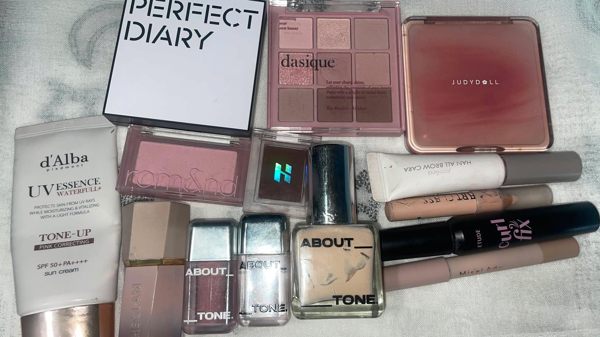
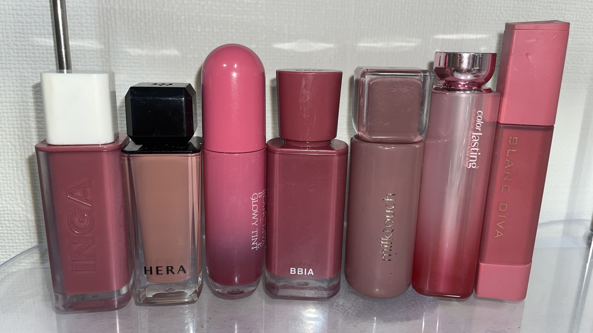
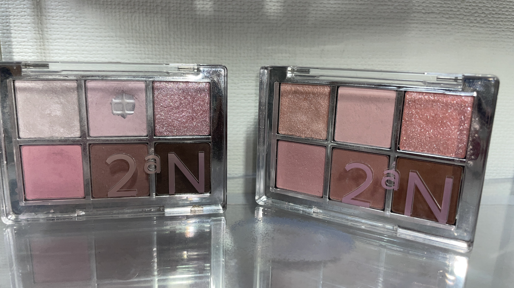
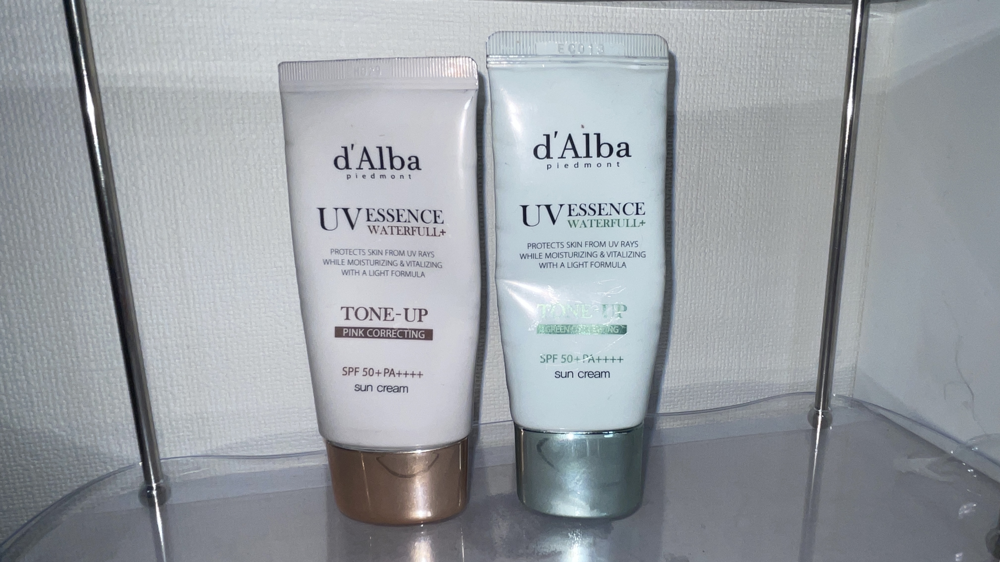

コスメ紹介
♡ Contents ♡
毎日メイク使用コスメ

私が毎日のメイクで愛用しているコスメを紹介します。 韓国メイクにぴったりで、毎日使っているお気に入りです。
自分にあったコスメを選ぶためのポイントをまとめました。
リップ

私のお気に入りのリップです。発色がよく、色持ちもいいので普段使いにおすすめです。
アイシャドウ

ラメ感がきれいで、発色の良いアイシャドウです。普段のメイクにも特別な日にも使いやすいです。
チーク

自然な血色感が出て、ふんわりとした仕上がりになります。毎日のメイクでよく使うお気に入りのチークです。
ファンデーション

カバー力があり、長時間きれいな肌を保ってくれるお気に入りのファンデーションです。自然な仕上がりで、普段使いにもぴったりです。
マスカラ

まつ毛がしっかり伸びて、カールも長時間キープできます。ダマになりにくく、とても使いやすいマスカラです。
化粧下地

メイクのノリをよくし、化粧崩れをふさいでくれるお気に入りの化粧下地です。肌をなめらかにみせてくれるので毎日使っています。